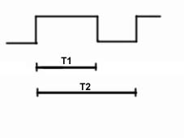

5040DD Check on pollution sensor signal
- Path
- Test > 50 AUXILIARY UNITS > 5040 AIR CONDITIONING CASING AND COMPONENTS > 5040D air conditioner controls > 5040DD Check on pollution sensor signal
- Kind
- test / check procedure
- Applies to
- all engines; all production periods
- Interactive page
- https://sloeber94.github.io/elrnDB-lYpsln/en/#/2429808
Applies to: all engines; all production periods
With the Examiner set to voltmeter function, select 20 volts full scale deflection and time base 5 seconds.
Connect the black Examiner probe to the vehicle earth and the red probe to pin 3 of the sensor output signal.
Turn the ignition ON.
Wait for 36 seconds for the sensor to warm up
Spray the gas in the aerosol ( Part no. 71715571) within no more than 60 seconds
Press the START button.
The signal displayed must be a PWM pulse train with a frequency of 5 Hz and a Duty Cycle between 20 and 60 % as shown in the attached table.

Applies to: all engines; all production periods
PWM% Duty Cycle = T1 / T2 where:
- T1 = pulse duration
- T2 = 1/f = 1/5 Hz = Transmission duration
Pin out:
- 1. +CH/15
- 2. earth
- 3. output signal
- 4. not connected
PWM signal significance
0% signal line short circuit to earth
20% unpolluted air circulation
40% pollution level 1
50% pollution level 2
60% pollution level 3
80% sensor error
100% short circuit +12 of signal line